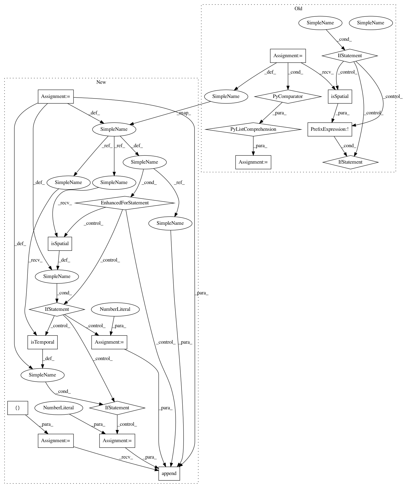

acfdf776a431cf8c2fbd7e53cd800beb72b64658,ilastik/applets/nanshe/preprocessing/opNansheWaveletTransform.py,OpNansheWaveletTransformCached,setupOutputs,#OpNansheWaveletTransformCached#,175
Before Change
axes_shape_iter = itertools.izip(self.opWaveletTransform.Output.meta.axistags,
self.opWaveletTransform.Output.meta.shape)
block_shape = [_v if not _k.isSpatial() else 256 for _k, _v in axes_shape_iter]
block_shape = tuple(block_shape)
self.opCache.innerBlockShape.setValue(block_shape)
self.opCache.outerBlockShape.setValue(block_shape)
After Change
axes_shape_iter = itertools.izip(self.opWaveletTransform.Output.meta.axistags,
self.opWaveletTransform.Output.meta.shape)
block_shape = []
for each_axistag, each_len in axes_shape_iter:
if each_axistag.isSpatial():
each_len = 256
elif each_axistag.isTemporal():
each_len = 10
block_shape.append(each_len)
block_shape = tuple(block_shape)
self.opCache.innerBlockShape.setValue(block_shape)
self.opCache.outerBlockShape.setValue(block_shape)
In pattern: SUPERPATTERN
Frequency: 3
Non-data size: 19
Instances
Project Name: ilastik/ilastik
Commit Name: acfdf776a431cf8c2fbd7e53cd800beb72b64658
Time: 2015-03-31
Author: kirkhamj@janelia.hhmi.org
File Name: ilastik/applets/nanshe/preprocessing/opNansheWaveletTransform.py
Class Name: OpNansheWaveletTransformCached
Method Name: setupOutputs
Project Name: ilastik/ilastik
Commit Name: 92bb95caccced6bfcafe57574658b52fd72df619
Time: 2015-03-31
Author: kirkhamj@janelia.hhmi.org
File Name: ilastik/applets/nanshe/preprocessing/opNansheExtractF0.py
Class Name: OpNansheExtractF0Cached
Method Name: setupOutputs
Project Name: ilastik/ilastik
Commit Name: acfdf776a431cf8c2fbd7e53cd800beb72b64658
Time: 2015-03-31
Author: kirkhamj@janelia.hhmi.org
File Name: ilastik/applets/nanshe/preprocessing/opNansheWaveletTransform.py
Class Name: OpNansheWaveletTransformCached
Method Name: setupOutputs
Project Name: ilastik/ilastik
Commit Name: 02fad01909103b13cf80dfee5e79a63621563c99
Time: 2015-03-31
Author: kirkhamj@janelia.hhmi.org
File Name: ilastik/applets/nanshe/preprocessing/opNansheRemoveZeroedLines.py
Class Name: OpNansheRemoveZeroedLinesCached
Method Name: setupOutputs